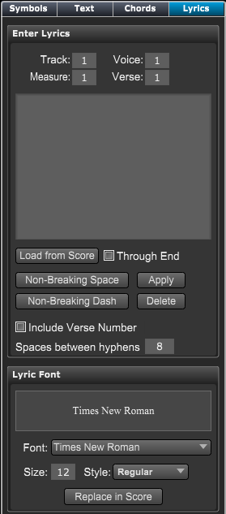

Tools Panel - Lyrics
Tools Panel - Lyrics
If Lyric Panel is not showing click on the Score Tools button at top left of Control Bar and then click on the Lyric section in the header if it's not active.
You can also type "Ctrl[Cmd]-Shift-L" to go directly to the Lyric section.

|
Enter Lyrics - Sets the location in score
- Track - The track to enter the lyrics.
- Measure - The measure to enter the lyrics.
- Voice - The voice (1-4) to enter the lyrics.
- Verse - The verse (1-8) to enter the lyrics.
Lyric Box - Type your lyrics to be entered in this area.
- Type a space to enter the next word/syllable under the next note.
- Type a dash (hyphen) to separate syllables between notes.
- Type an underscore to extend the word/syllable to the next note.
- Use the buttons below to enter non-breaking dashed or spaces.
Lyric Commands
- Load From Score - Click this button to load in lyrics from the score at current location.
- Non-Breaking Space - Click this button to enter a non-breaking space.
- Non-Breaking Dash - Click this button to enter a non-breaking dash.
- Apply - Click this button to enter the lyrics into your score.
- Delete - Deletes the lyrics at current location.
- Include Verse Number - Check this to have Overture enter a Verse number before the lyric line.
- Spaces between hyphens - Spacing between multiple hyphens.
Lyric Font - The font to use for this lyric line.
- Font - Sets the current font for new text to be entered.
- Size and Style - Sets current font size and style for new text to be entered.
- Make Default - Makes this the default font for text style.
- Replace in Score - Replaces all lyrics in the score with this font.
|
To enter lyrics directly on the score:
- Choose the pencil tool using button on control bar.
- Click on the score under the note where you wish to start entering lyrics. A small text entry box appears.
- Type in the word/syllable to be entered. (See the Lyric Box description for different methods)
- Press the space bar to enter the word/syllable and move to the next note position.
Press the return key to enter the current lyric and exit entry mode.
Press the esc key to exit entry mode without entering the lyric.
To enter lyric lines/phrases using the Lyric Panel:
- Choose the score location using numericals at top of the panel. (Note: clicking in the score will automatically set the values).
- Type in the lyric line including space/dashes, special buttons, etc. and then press the Apply button.
To reposition lyrics vertically:
When the Lyric Panel is open a drag handle for the current staff and verse will appear at the system left edge.
- Drag the handle vertically to move all the lyrics on the current staff.
- To reset all lyrics vertically to sit on the line, hold the shift key while dragging.
For more information, see Advanced Lyric Entry Techniques.